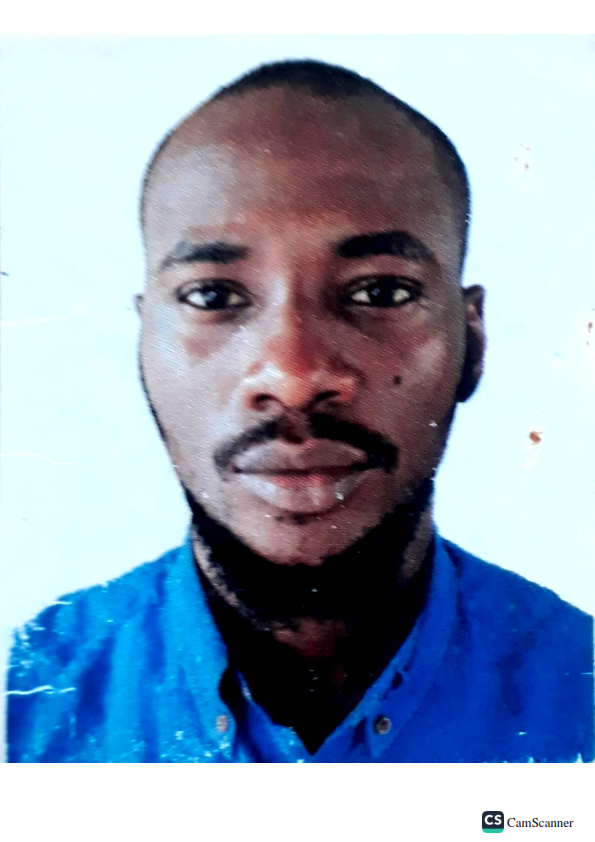

Seun Olayinka

Summary
I am a hardworking and dedicated individual in creating User interface and user designs.
Education
- Higher National Diploma in Civil Engineering - Yaba College of Technology.
Work Experience
Asst. QAQC Engineer - China Civil Engineering Construction Company
- Conducting various test for the different layers of the pavement.
- Conducting all tests for aggregates and bituminous tests
- Updating daily progress report
QAQC Engineer
- Process control, Quality control and testing of concrete materials
- Ensure quality of concrete produced is in accordance with specifications
- Ensure Batching plant calibration are done according to schedule
Skills
- Microsoft Office Suite ⭐️⭐️⭐️⭐️⭐️
- AutoCAD⭐️⭐️⭐️⭐️
- Project Management⭐️⭐️⭐️⭐️⭐️
- UIUX Designs⭐️⭐️⭐️⭐️
Award and Certifications
- NiStructE
- Google UX Design Professional Cert
Other